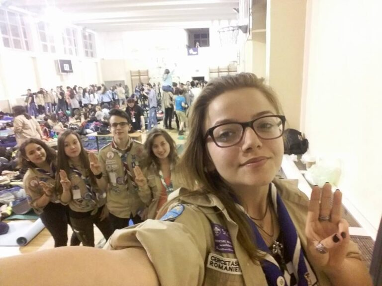

Aici Radio Cabana!

Exploratorii noștrii au fost la BQ 2016! Iată ce au avut de împărtășit la finalul evenimentului:
“Buletinul radio numărul 113, anul 2046
Avem nevoie de toate patrulele de exploratori disponibile din ţară, însoţite de cei mai curajoşi lideri, să ni se alăture în misiunea de reconstruire a civilizaţiei aşa cum o ştiam. Pentru că nu avem date suficiente despre ce a rămas din lumea veche, vom fi nevoiţi să explorăm ruinele vechiului oraş pentru a colecta informaţii, date, artefacte din trecut pentru a putea salva ştiinţa şi cultura vechii lumi, pentru a creea una mai bună.
Aici Comandamentul Central SCOUT. Transmisiune încheiată.”
22 aprilie, ora 20:00, Liceul Ion Neculce.
Şi iaca 5 exploratori cabanieri, citind buletinul radio, s-au alăturat în aceasta aventură plini de speranţă şi voie bună. Numai că noi am vrut să ne asigurăm că prindem locuri bune în sala de sport în care am dormit, aşa că am plecat cu 7 ore mai devreme. Să fim siguri, nu? E de la sine înţeles că eram primii acolo şi aşa am fost o lungă perioadă de timp. Încet, încet au apărut şi alte centre şi, în timp ce ne aşezam sacii şi izoprenele, ne mai căutam şi câte un coleg de patrulă. La deschidere, îmbracaţi în uniformă, fiecare centru şi-a făcut strigatul, apoi a urmat o prezentare a evenimentului… şi “noapte bună”. Eh, aproximativ 200 de cercetaşi într-o încăpere…vă spun că a fost o noapte lungă.
Prima zi. Dimineaţa ne-am trezit cu ajutorul muzicii de la boxe, muzică ce a acoperit mai multe genuri pe placul tuturor. Ca program am avut ateliere. Fiecare cercetaş participa la două ateliere – unul dimineaţa şi unul după-amiază. Jocuri, teatru şi improvizaţie, construcţii, herbologie, dezbateri şi multe altele. Din experienţa proprie şi din impresiile împărtăşite, concluzia a fost că noi CHIAR ne-am distrat şi am învăţat lucruri noi. Fiecare dintre noi a fost marcat de un atelier, încât vorbeam unii peste alţii din dorinţa de a împărtăşi cu ceilalţi momentele minunate pe care le-am trăit. Seara ne-am jucat pe grupuleţe mai mici, adunându-ne din fiecare colţ al sălii, interacţionând şi cunoscându-ne cât mai bine abilităţile.
A doua zi a fost traseul pe patrulele mixte prin Bucureşti. Patrula avea cam 8 membrii, fiecare dintr-o altă zonă a României. Am avut 14 check point-uri de atins printre care şi Muzeul Ţăranului Român, Parcul Herăstrău, Mănăstirea Caşin, Arena Naţională, Parcul Titan şi multe altele. Ne-am plimbat, nu glumă, având timp de la ora 9-10 dimineaţa până la ora 17. Am ajuns uzi din cap până în picioare, dar cu multe amintiri frumoase, aşteptând să apară toate patrulele să putem începe a povesti. Printre cei premiaţi s-au aflat şi doi cercetaşi cabanieri care au făcut parte din patrulele care au luat premiul I şi II – Ţestoasele atomice şi Animaluţele radioactive. După nume vă sună ceva… ceva… ştiţi voi la ce mă refer. Mândri şi voioşi, după ce am primit şi diploma de participare a centrului nostru la BQ, am încheiat seara cu strigătele de centru şi cu aruncarea unor baloane care aveau înăuntru sau prinse de ele nişte mesaje încurajatoare destinate să ajungă la alţi cercetaşi. Şi multe poze, da… multe poze.
Fiindcă era ultima seară, cercetaşii au avut chef de distracţie aşa că mai nimic nu i-a oprit din a face asta. Decât ora 5 dimineaţa. Da, doar asta. Mai multe detalii nu ştiu să vă zic, pentru ca eu ( şi probabil încă câţiva oameni obosiţi aşa ca mine) am dormit neîntoarsă după aşa zi plină de peripeţii şi ploaie…şi ce mai ploaie; dar a meritat. Cine are diplome pentru locul I si II ? Cine, cine? Nu aud! CABANAAA. Ştiaţi că suntem modeşti? J
Revenind, dimineaţa ne-am făcut bagajul, ne-am luat la revedere de la toţi cei pe care nu-i vom mai vedea ceva vreme şi am plecat spre casă. Noroc că noi nu am avut de luat vreun tren sau autocar, ci doar un metrou.
Cam aşa a fost la Bucuresti Quest 2016. Un eveniment plin de aventură, dorinţă de cunoaştere, cu prietenii noi legate care vor dăinui mult timp. Cine mai merge la anul la BQ? Cabana Scout ! Şi cine mai ia premiu la următoarea ediţie? Haha. 🙂
Aici Valentina Petre. Transmisiune încheiată!